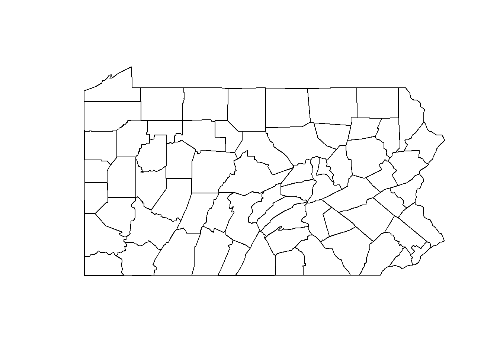

Paula Moraga laat zien hoe je geografische gegevens kunt analyseren met het programma INLA
Author
Paula Moraga, bewerking HarrieJonkman
Published
August 15, 2022
Paula Moraga’s boek
1. Introductie
Geospatial Health Data: Modeling and Visualization with R-INLA and Shiny beschrijft hoe je geografische gezondheidsgegevens in R analyseert en visualiseert. Het is een goede introductie op hoe je ziekten en ziektelast in kaart kunt brengen en hoe nieuwe computertechnieken als de integrated nested Laplace approximation (INLA) werken om plaatselijke en geostatistische gegevens te analyseren en te visualiseren. Deze nieuwe benadering maakt het mogelijk de ziektelast te kwantificeren, geografische patronen en veranderingen in de tijd te begrijpen, risicofactoren te identificeren en ongelijkheden tussen bevolkingsgroepen te meten. Het boek van Paula Moraga laat ook zien hoe interactieve en statische visualisaties kunnen worden gemaakt, zoals ziektekaarten en tijdplots en beschrijft verschillende R-pakketten die kunnen worden gebruikt om analyses eenvoudig om te zetten in informatieve en interactieve rapporten, dashboards, en Shiny webapplicaties. Dit alles vergemakkelijkt de communicatie van inzichten naar medewerkers en beleidsmakers.
Het boek bevat gedetailleerde voorbeelden van verschillende ziekte- en milieutoepassingen die gebruik maken van gegevens uit de praktijk, zoals malaria in Gambia, kanker in Schotland en de VS en luchtvervuiling in Spanje. De voorbeelden in het boek zijn toegespitst op gezondheidstoepassingen, maar de behandelde benaderingen zijn ook toepasbaar op andere gebieden die gebruik maken van geografische gegevens zoals epidemiologie, ecologie, demografie of criminologie. Het boek behandelt de volgende onderwerpen:
Soorten ruimtelijke gegevens en coördinaatreferentiesystemen,
Manipuleren en transformeren van punt-, areaal- en rasterdata,
Ophalen van ruimtelijke milieugegevens met een hoge resolutie,
Het passen en interpreteren van Bayesiaanse ruimtelijke en spatio-temporele modellen met het R-INLA pakket,
Modelleren van ziekterisico en kwantificeren van risicofactoren in verschillende settings,
Creëren van interactieve en statische visualisaties zoals ziekterisicokaarten en tijdplots,
Creëren van reproduceerbare rapporten met R Markdown,
Het ontwikkelen van dashboards met flexdashboard,
Het bouwen van interactieve Shiny web applicaties.
Het boek maakt gebruik van publiek beschikbare gegevens en beschrijft de R-code voor het importeren, manipuleren, modelleren en visualiseren van de gegevens, evenals de interpretatie van de resultaten. Hierdoor is de inhoud volledig reproduceerbaar en toegankelijk voor studenten, onderzoekers en praktijkmensen (hoewel dat in mijn geval nietg altijd even makkelijk lukte en uiteindelijk is het jammer dat ze niet deze gegevens op Github heeft gezet). In deze tutorial laat ik via Paula Moraga zien hoe INLA werkt. In het tweede deel volg ik een geografische analyse van …
2. Hoe werkt INLA
De “integrated nested Laplace approximation” (INLA) benadering is geïmplementeerd in het R pakket R-INLA (Havard Rue et al. 2021). Instructies hoe het pakket installeert vind je op de INLA website (http://www.r-inla.org). Daar vind je ook documentatie over het pakket, voorbeeld, een discussieforum en andere bronnen over de theorie en toepassingen van INLA. Het pakket R-INLA staat niet op CRAN (the Comprehensive R Archive Network) omdat het externe C-bibliotheken gebruikt en dat zorgt voor bepaalde problemen. Dus als je het pakket wilt installeren gebruik dan install.packages() en voeg de URL van de R-INLA repository toe. Bijvoorbeeld om een stabiele versie van het pakket te installeren, moeten we de volgende instructie toevoegen:
install.packages("INLA",
repos = "https://inla.r-inla-download.org/R/stable", dep = TRUE)
Om dan het pakket en twee andere pakketten te laden, is het nodig het volgende te typen:
library(tidyverse)
Warning: package 'tidyverse' was built under R version 4.1.3
v ggplot2 3.3.6 v purrr 0.3.4
v tibble 3.1.7 v dplyr 1.0.9
v tidyr 1.2.0 v stringr 1.4.1
v readr 2.1.2 v forcats 0.5.1
Warning: package 'ggplot2' was built under R version 4.1.3
Warning: package 'tibble' was built under R version 4.1.3
Warning: package 'tidyr' was built under R version 4.1.3
Warning: package 'readr' was built under R version 4.1.3
Warning: package 'dplyr' was built under R version 4.1.3
Warning: package 'stringr' was built under R version 4.1.3
-- Conflicts ------------------------------------------ tidyverse_conflicts() --
x dplyr::filter() masks stats::filter()
x dplyr::lag() masks stats::lag()
library(sf)
Warning: package 'sf' was built under R version 4.1.3
Linking to GEOS 3.9.1, GDAL 3.2.1, PROJ 7.2.1; sf_use_s2() is TRUE
library(INLA)
Warning: package 'INLA' was built under R version 4.1.3
Loading required package: Matrix
Attaching package: 'Matrix'
The following objects are masked from 'package:tidyr':
expand, pack, unpack
Loading required package: foreach
Warning: package 'foreach' was built under R version 4.1.3
Attaching package: 'foreach'
The following objects are masked from 'package:purrr':
accumulate, when
Loading required package: parallel
Loading required package: sp
Warning: package 'sp' was built under R version 4.1.3
This is INLA_22.05.03 built 2022-05-03 07:58:22 UTC.
- See www.r-inla.org/contact-us for how to get help.
Om een model met INLA te fitten moeten we twee stappen nemen. - Eerst schrijven we de lineaire voorspeller van het model als een formule-object in R.
- Dan voeren we het model uit door de inla() functie aan te roepen waarin we de formule, de familie, de data en andere opties specificeren. De uitvoering van inla() geeft een object terug dat de informatie van het gepaste model bevat, met inbegrip van verscheidene samenvattingen en de posterior marginals van de parameters, de lineaire voorspellers, en de gepaste waarden.
- Deze posteriors kunnen vervolgens worden nabewerkt met behulp van een reeks functies die door R-INLA worden geleverd. - Het pakket biedt ook schattingen van verschillende criteria om Bayesiaanse modellen te beoordelen en te vergelijken. Deze omvatten het informatiecriterium voor modelafwijking (DIC) (Spiegelhalter et al. 2002), het Watanabe-Akaike-informatiecriterium (WAIC) (Watanabe 2010), de marginale waarschijnlijkheid en de conditionele voorspellende ordinaten (CPO) (Held, Schrödle, and Rue 2010). Meer details over het gebruik van R-INLA worden hieronder gegeven.
Lineaire voorspeller
De syntaxis van de lineaire voorspeller in R-INLA is vergelijkbaar met de syntaxis die wordt gebruikt om lineaire modellen te fitten met de (bekende) functie lm(). We moeten de uitkomstvariabele schrijven, dan het ~ symbool, en tenslotte de vaste en willekeurige effecten gescheiden door + operatoren. Willekeurige effecten worden gespecificeerd door gebruik te maken van de f() functie. Het eerste argument van f() is een indexvector die het element van het willekeurige effect specificeert dat van toepassing is op elke observatie, en het tweede argument is de naam van het model (b.v. “iid”, “ar1”). Bijkomende parameters van f() kunnen bekeken worden door ?f in te typen. Bijvoorbeeld, als we het model
waar \(Y_i\) de uitkomstvariable is, \(\eta_1\) is de lineaire voorspeller, met \(x_1, x_2\) als twee verklarende variabelen en met \(u_1 \sim N(0,\sigma^2)\) wordt de formule geschreven als
\[y \sim x_1 + x_2 + f(i, model="iid")\]
Merk op dat de formule standaard een intercept bevat. Als we \(beta_0\) expliciet in de formule willen opnemen, zouden we het intercept moeten verwijderen (0 toevoegen) en het als een covariate term moeten opnemen (b0 toevoegen).
De inla() functie wordt gebruikt om het model te fitten. De belangrijkste argumenten van inla() zijn de volgende:
formula: formuleobject dat de lineaire voorspeller specificeert,
data: dataframe met de data. Als we de responsvariabele voor enkele observaties willen voorspellen, moeten we de responsvariabele van deze observaties specificeren als NA;
family: string of vector van tekenreeksen die de waarschijnlijkheidsfamilie aangeven, zoals gaussian, poisson of binomial. Standaard is de familie gaussian. Een lijst van mogelijke alternatieven kan worden bekeken door names(inla.models()$likelihood) in te typen, en details voor individuele families kunnen worden bekeken met inla.doc(“familyname”);
control.compute: lijst met de specificatie van verschillende rekenvariabelen, zoals dic dat een Booleaanse variabele is die aangeeft of de DIC van het model moet worden berekend;
control.predictor: lijst met de specificatie van verschillende variabelen voor de voorspellers, zoals link, de linkfunctie van het model, en compute, een Booleaanse variabele die aangeeft of de marginale dichtheden voor de lineaire voorspeller moeten worden berekend.
Prior specificatie
De namen van de priors die beschikbaar zijn in R-INLA kunnen worden bekeken door names(inla.models()$prior) in te typen, en een lijst met de opties van elk van de priors kan worden bekeken met inla.models()$prior. De documentatie over een specifieke prior kan worden bekeken met inla.doc(“priorname”).
Standaard wordt aan het intercept van het model een Gaussische prior toegekend met gemiddelde en precisie gelijk aan 0. Aan de rest van de vaste effecten worden Gaussische priors toegekend met gemiddelde gelijk aan 0 en precisie gelijk aan 0.001. Deze waarden kunnen worden bekeken met inla.set.control.fixed.default()[c("mean.intercept", "prec.intercept", "mean", "prec")]. De waarden van deze priors kunnen worden veranderd in het control.fixed argument van inla() door een lijst toe te wijzen met het gemiddelde en de precisie van de Gaussische verdelingen. Specifiek bevat de lijst mean.intercept en prec.intercept die het prior gemiddelde en de precisie voor het intercept vertegenwoordigen, en mean en prec die het prior gemiddelde en de precisie vertegenwoordigen voor alle vaste effecten behalve het intercept.
The names of the priors available in R-INLA can be seen by typing names(inla.models()\(prior), and a list with the options of each of the priors can be seen with inla.models()\)prior. The documentation regarding a specific prior can be seen with inla.doc(“priorname”).
prior.fixed <- list(mean.intercept = <>, prec.intercept = <>,
mean = <>, prec = <>)
res <- inla(formula,
data = d,
control.fixed = prior.fixed
)
De priors van de hyperparameters \(\theta\) worden toegewezen in de argument hyper van f().
formula <- y ~ 1 + f(<>, model = <>, hyper = prior.f)
De priors van de parameters van de likelihood worden toegewezen in de parameter control.family van inla().
res <- inla(formula,
data = d,
control.fixed = prior.fixed,
control.family = list(..., hyper = prior.l)
)
hyper accepteert een benoemde lijst met namen gelijk aan elk van de hyperparameters en waarden gelijk aan een lijst met de specificatie van de priors. Specifiek bevat de lijst de volgende waarden:
initial: initiële waarde van de hyperparameter (goede initiële waarden kunnen het inferentieproces sneller maken), prior: naam van de prior verdeling (bijv. “iid”, “bym2”), param: vector met de waarden van de parameters van de prior verdeling, vaste: Booleaanse variabele die aangeeft of de hyperparameter een vaste waarde is.
Priors moeten worden ingesteld in de interne schaal van de hyperparameters. Bijvoorbeeld, het iid model definieert een vector van onafhankelijke en Gaussisch verdeelde willekeurige variabelen met precisie \(\Gamma\). We kunnen de documentatie van dit model bekijken door inla.doc(“iid”) in te typen en zien dat de precisie \(\Gamma\) in de log-schaal wordt weergegeven als \(log(\Gamma)\). Daarom moet de prioriteit gedefinieerd worden op de log-precisie \(log(\Gamma)\).
R-INLA biedt ook een nuttig kader voor het bouwen van priors genaamd Penalized Complexity of PC priors (Fuglstad et al. 2019). PC priors worden gedefinieerd op individuele modelcomponenten die kunnen worden beschouwd als een flexibele uitbreiding van een eenvoudig, interpreteerbaar, basismodel. PC priors bestraffen afwijkingen van het basismodel. Zo controleren ze de flexibiliteit, verminderen ze over-fitting, en verbeteren ze de voorspellende prestaties. PC-prioriteiten hebben één parameter die de in het model toegestane mate van flexibiliteit bepaalt. Deze priors worden gespecificeerd door de waarden \(U,\alpha\) zo in te stellen dat
\[P(T(\epsilon)>U)=alpha,\]
waarin \(T(\epsilon)\) een interpreteerbare transformatie is van de flexibiliteitsparameter \(\epsilon\)\(U\) een bovengrens is die een staartgebeurtenis specificeert, en \(alpha\) de waarschijnlijkheid van deze gebeurtenis is.
Voorbeeld
Hier laten we een voorbeeld zien dat demonstreert hoe een model te specificeren en te fitten en de resultaten te inspecteren met behulp van een echte dataset en R-INLA. Meer specifiek modelleren we gegevens over sterftecijfers na operaties in 12 ziekenhuizen. Het doel van deze analyse is om aan de hand van sterftecijfers de prestaties van elk ziekenhuis te beoordelen en te bepalen of een ziekenhuis ongewoon goed of slecht presteert.
Data
We gebruiken de data Surg die het aantal operaties en het aantal sterfgevallen bevat in 12 ziekenhuizen waar hartchirurgie op baby’s wordt uitgevoerd. Surgis een dataframe met drie kolommen, namelijkhospitalvoor het ziekenhuis,nvoor het aantal operaties dat in elk ziekenhuis in een periode van een jaar is uitgevoerd, enr` voor het aantal sterfgevallen binnen 30 dagen na de operatie in elk ziekenhuis.
Surg
n r hospital
1 47 0 A
2 148 18 B
3 119 8 C
4 810 46 D
5 211 8 E
6 196 13 F
7 148 9 G
8 215 31 H
9 207 14 I
10 97 8 J
11 256 29 K
12 360 24 L
Model
Wij specificeren een model om de sterftecijfers in elk van de ziekenhuizen te verkrijgen. We gaan uit van een binomiale waarschijnlijkheid voor het aantal sterfgevallen in elk ziekenhuis, \(Y_i\), met sterftecijfer \(p_i\)
\[Y_i \sim Binomial(n_1,p_1), i=1, ...,12\]
We nemen ook aan dat de sterftecijfers in de verschillende ziekenhuizen op één of andere manier gelijkaardig zijn en specificeren een random effects-model voor de werkelijke sterftecijfers \(p_i\)
Standaard wordt een niet-informatieve prior gespecificeerd voor \(\alpha\), die het populatielogit-sterftecijfer is
\[\alpha \sim N(0, 1/\Gamma), \Gamma=0\]
In R-INLA is de standaard prior voor de precisie van de willekeurige effecten \(U_i\)\(1/sigma^2 \sim Gamma(1,5x10^-5)\)$. We kunnen deze prioriteit veranderen door een Penalized Complexity (PC) prioriteit in te stellen op de standaardafwijking \(\sigma\). We kunnen bijvoorbeeld specificeren dat de waarschijnlijkheid dat \(\sigma\) groter is dan 1 klein is, gelijk aan 0,01: \(P(\sigma>1)=0,01\). In R-INLA wordt deze prioriteit gespecificeerd als
en het model wordt vertaald in R-code met behulp van de volgende formule:
formula <- r ~f(hospital, model ="iid", hyper = prior.prec)
Informatie over het model genaamd “iid” kan worden gevonden door inla.doc(“iid”) in te typen, en documentatie over de PC-voorafgaande “pc.prec” kan worden gezien met inla.doc(“pc.prec”).
Vervolgens roepen we inla() aan met vermelding van de formule, de data, de familie en het aantal trials. We voegen control.predictor = list(compute = TRUE) toe om de posterior marginals van de parameters te berekenen, en control.compute = list(dic = TRUE) om aan te geven dat de DIC berekend moet worden.
Warning in .recacheSubclasses(def@className, def, env): undefined subclass
"packedMatrix" of class "replValueSp"; definition not updated
Warning in .recacheSubclasses(def@className, def, env): undefined subclass
"packedMatrix" of class "mMatrix"; definition not updated
Resultaten
Wanneer inla() wordt uitgevoerd, krijgen we een object van de klasse inla dat de informatie van het gepaste model bevat, inclusief samenvattingen en posterior marginale dichtheden van de vaste effecten, de willekeurige effecten, de hyperparameters, de lineaire voorspellers en de gepaste waarden. Een samenvatting van het geretourneerde object res kan worden bekeken met summary(res).
summary(res)
Call:
c("inla.core(formula = formula, family = family, contrasts = contrasts,
", " data = data, quantiles = quantiles, E = E, offset = offset, ", "
scale = scale, weights = weights, Ntrials = Ntrials, strata = strata,
", " lp.scale = lp.scale, link.covariates = link.covariates, verbose =
verbose, ", " lincomb = lincomb, selection = selection, control.compute
= control.compute, ", " control.predictor = control.predictor,
control.family = control.family, ", " control.inla = control.inla,
control.fixed = control.fixed, ", " control.mode = control.mode,
control.expert = control.expert, ", " control.hazard = control.hazard,
control.lincomb = control.lincomb, ", " control.update =
control.update, control.lp.scale = control.lp.scale, ", "
control.pardiso = control.pardiso, only.hyperparam = only.hyperparam,
", " inla.call = inla.call, inla.arg = inla.arg, num.threads =
num.threads, ", " blas.num.threads = blas.num.threads, keep = keep,
working.directory = working.directory, ", " silent = silent, inla.mode
= inla.mode, safe = FALSE, debug = debug, ", " .parent.frame =
.parent.frame)")
Time used:
Pre = 0.361, Running = 0.178, Post = 0.0156, Total = 0.555
Fixed effects:
mean sd 0.025quant 0.5quant 0.975quant mode kld
(Intercept) -2.545 0.14 -2.838 -2.54 -2.281 NA 0
Random effects:
Name Model
hospital IID model
Model hyperparameters:
mean sd 0.025quant 0.5quant 0.975quant mode
Precision for hospital 12.03 18.45 2.39 8.29 41.48 NA
Deviance Information Criterion (DIC) ...............: 74.92
Deviance Information Criterion (DIC, saturated) ....: -10.09
Effective number of parameters .....................: 8.25
Marginal log-Likelihood: -41.17
is computed
Posterior summaries for the linear predictor and the fitted values are computed
(Posterior marginals needs also 'control.compute=list(return.marginals.predictor=TRUE)')
We kunnen de resultaten plotten met plot(res) of ook met plot(res, plot.prior = TRUE) als we de prior en posterior verdelingen in dezelfde plot willen plotten. Bij het uitvoeren van inla(), stellen we control.compute = list(dic = TRUE) in; het resultaat bevat dus de DIC van het model. De DIC is gebaseerd op een afweging tussen de fit van de data met het model en de complexiteit van het model, waarbij kleinere waarden van de DIC wijzen op een beter model.
res$dic$dic
[1] 74.91639
Samenvattingen van de vaste effecten kunnen worden verkregen door res$summary.fixed te typen. Dit geeft een dataframe met het gemiddelde, de standaardafwijking, de 2.5, 50 en 97.5 percentielen, en de modus van de posterior. De kolom kld vertegenwoordigt de symmetrische Kullback-Leibler divergentie (Kullback en Leibler 1951) die het verschil beschrijft tussen de Gaussische en de vereenvoudigde of volledige Laplace benaderingen voor elke posterior.
res$summary.fixed
mean sd 0.025quant 0.5quant 0.975quant mode
(Intercept) -2.544918 0.1397936 -2.837923 -2.539921 -2.28079 NA
kld
(Intercept) 8.954842e-07
We kunnen ook de samenvattingen van de willekeurige effecten en de hyperparameters verkrijgen door respectievelijk res$summary.random (dat is een lijst) en res$summary.hyperpar (dat is een dataframe) in te typen.
res$summary.random
$hospital
ID mean sd 0.025quant 0.5quant 0.975quant mode
1 A -0.33406820 0.3602496 -1.16244166 -0.29229930 0.2667848 NA
2 B 0.35104026 0.2505440 -0.10884559 0.33952295 0.8720476 NA
3 C -0.04135773 0.2607975 -0.57640794 -0.03644290 0.4658754 NA
4 D -0.21854717 0.1807342 -0.58257453 -0.21594766 0.1335713 NA
5 E -0.35557089 0.2630880 -0.92502879 -0.33630171 0.1091291 NA
6 F -0.05946957 0.2351525 -0.53899792 -0.05529945 0.3976316 NA
7 G -0.09895756 0.2528987 -0.62440372 -0.09094182 0.3839509 NA
8 H 0.55150426 0.2367636 0.11498312 0.54305052 1.0390541 NA
9 I -0.04843948 0.2317468 -0.51893437 -0.04509937 0.4039301 NA
10 J 0.06200418 0.2677363 -0.46881109 0.05949329 0.6007338 NA
11 K 0.35085676 0.2194395 -0.05555904 0.34210247 0.8051331 NA
12 L -0.06821881 0.2061014 -0.48258048 -0.06622692 0.3363430 NA
kld
1 2.001880e-05
2 2.389700e-07
3 6.118419e-08
4 5.310581e-07
5 7.107832e-07
6 1.358690e-08
7 9.493184e-08
8 5.446908e-07
9 1.059835e-08
10 7.918263e-09
11 4.687372e-07
12 1.350071e-07
res$summary.hyperpar
mean sd 0.025quant 0.5quant 0.975quant mode
Precision for hospital 12.02899 18.44555 2.388014 8.28797 41.47951 NA
Bij het uitvoeren van inla(), als we in control.predictorcompute = TRUE instellen, bevat het geretourneerde object ook de volgende objecten:
summary.linear.predictor: dataframe met het gemiddelde, de standaardafwijking, en de kwantielen van de lineaire voorspellers,
summary.fitted.values: dataframe met het gemiddelde, de standaardafwijking, en de kwantielen van de gepaste waarden, verkregen door de lineaire voorspellers te transformeren met de inverse van de link-functie,
marginals.linear.predictor: lijst met de posterior marginals van de lineaire voorspellers,
marginals.fitted.values: lijst met de posterior marginals van de gepaste waarden, verkregen door de lineaire voorspellers te transformeren met de inverse van de link functie.
Merk op dat als een observatie NA is, de gebruikte link functie de identiteit is. Als we willen dat summary.fitted.values en marginals.fitted.values de waarden in de getransformeerde schaal bevatten, moeten we de juiste link in control.predictor instellen. Als alternatief kunnen we handmatig de marginale in het inla object transformeren met de inla.tmarginal() functie.
De voorspelde sterftecijfers in ons voorbeeld kunnen worden verkregen met res$summary.fitted.values.
res$summary.fitted.values
mean sd 0.025quant 0.5quant 0.975quant
fitted.Predictor.01 0.05642778 0.018677757 0.02294091 0.05560010 0.09582051
fitted.Predictor.02 0.10255660 0.021272480 0.06698668 0.10044747 0.14981711
fitted.Predictor.03 0.07215853 0.017029578 0.04221709 0.07094233 0.10937080
fitted.Predictor.04 0.05999148 0.007838246 0.04535747 0.05974367 0.07606421
fitted.Predictor.05 0.05385859 0.012887205 0.03040246 0.05331382 0.08060048
fitted.Predictor.06 0.07051287 0.014441435 0.04457621 0.06968184 0.10138361
fitted.Predictor.07 0.06828696 0.015506637 0.04055066 0.06737396 0.10157276
fitted.Predictor.08 0.12189766 0.021778636 0.08366009 0.12048708 0.16832000
fitted.Predictor.09 0.07117427 0.014254142 0.04556131 0.07035496 0.10162729
fitted.Predictor.10 0.07945514 0.019285314 0.04664630 0.07763853 0.12273357
fitted.Predictor.11 0.10187113 0.017164260 0.07180930 0.10065672 0.13876928
fitted.Predictor.12 0.06944861 0.011553476 0.04829115 0.06892959 0.09364931
mode
fitted.Predictor.01 NA
fitted.Predictor.02 NA
fitted.Predictor.03 NA
fitted.Predictor.04 NA
fitted.Predictor.05 NA
fitted.Predictor.06 NA
fitted.Predictor.07 NA
fitted.Predictor.08 NA
fitted.Predictor.09 NA
fitted.Predictor.10 NA
fitted.Predictor.11 NA
fitted.Predictor.12 NA
De kolom mean laat zien dat de ziekenhuizen 2, 8 en 11 de hoogste posterior gemiddelden van de sterftecijfers hebben. De kolommen 0.025quant en 0.975quant bevatten de onder- en bovengrenzen van 95% geloofwaardige intervallen van de sterftecijfers en geven maatstaven voor de onzekerheid.
We kunnen ook een lijst verkrijgen met de posterior marginals van de vaste effecten door res$marginals.fixed te typen en lijsten met de posterior marginals van de random effecten en de hyperparameters door respectievelijk marginals.random en marginals.hyperpar te typen. Marginals zijn benoemde lijsten die matrices met 2 kolommen bevatten. Kolom x vertegenwoordigt de waarde van de parameter, en kolom y is de dichtheid. R-INLA bevat verschillende functies om de posterior marginals te manipuleren. Bijvoorbeeld, inla.emarginal() en inla.qmarginal() berekenen de verwachting en kwantielen, respectievelijk, van de posterior marginalen. inla.smarginal() kan worden gebruikt om een spline afvlakking te verkrijgen, inla.tmarginal() kan worden gebruikt om de marginalen te transformeren, en inla.zmarginal() geeft samenvattende statistieken.
In ons voorbeeld bevat het eerste element van de posterior marginalen van de vaste effecten, res$marginals.fixed[[1]], de posterior elementen van het intercept $ We kunnen inla.smarginal() toepassen om een spline afvlakking van de marginale dichtheid te verkrijgen en deze vervolgens plotten met de ggplot() functie van het ggplot2 pakket.
Het kwantiel en de verdelingsfuncties worden gegeven door inla.qmarginal() en inla.pmarginal(), respectievelijk. We kunnen het kwantiel 0.05 van \(\alpha\) verkrijgen, en de kans dat \(\alpha\) lager is dan dit kwantiel als volgt uitzetten:
quant <-inla.qmarginal(0.05, alpha)quant
[1] -2.781812
inla.pmarginal(quant, alpha)
[1] 0.05
Een grafiek van de waarschijnlijkheid dat \(\alpha\) lager is dan het 0,05 kwantiel kan als volgt worden gemaakt
Indien we een transformatie van de marginale willen verkrijgen, kunnen we inla.tmarginal() gebruiken. Indien we bijvoorbeeld de variantie van het willekeurige effect \(u_i\) willen verkrijgen, kunnen we de marginale van de precisie \(gamma\) verkrijgen en dan de inverse functie toepassen.
marg.variance <-inla.tmarginal(function(x) 1/x,res$marginals.hyperpar$"Precision for hospital")
Een plot van de posterior van de variantie van het willekeurige effect \(u_i\) is weergegeven in
In deze tutorial worden methodes om ziekte in kaarten te zetten gepresenteerd, specifiek om het risico op longkanker in Pennsylvania, Verenigde Staten, in het jaar 2002 in te schatten. We gebruiken gegevens van het R-pakket SpatialEpi dat de bevolking, de gevallen van longkanker en de verhouding rokers in de districten van Pennsylvania bevat. De bevolkingsgegevens zijn afkomstig van de 2000 decennium census. De ziektegevallen en het percentage rokers zijn afkomstig van de website van het Pennsylvania Departement van Gezondheid.
Wij laten zien hoe de waargenomen en verwachte ziektegevallen en de gestandaardiseerde sterfteratio’s (SMR’s) in elk van de districten van Pennsylvania kunnen worden berekend. We verkrijgen ook schattingen van het ziekterisico en kwantificeren risicofactoren met behulp van INLA. Tenslotte laten we zien hoe we interactieve kaarten kunnen maken van de ziekterisicoschattingen met behulp van leaflet.
Een uitgebreide versie van dit voorbeeld verscheen in Moraga, P. Small Area Disease Risk Estimation and Visualization Using R. The R Journal, 10(1):495-506, 2018, en het boek Moraga, P. Geospatial Health Data: Modeling and Visualization with R-INLA and Shiny. Chapman & Hall/CRC, 2019.
Data en kaart
We laden het pakket SpatialEpien halen de data binnen.
library(SpatialEpi)
Warning: package 'SpatialEpi' was built under R version 4.1.3
data(pennLC)
Vervolgens inspecteren we de data:
class(pennLC)
[1] "list"
names(pennLC)
[1] "geo" "data" "smoking" "spatial.polygon"
We zien dat pennLC een listobject is met de volgende elementen:
geo: een tabel met provincie-id’s, en de lengte- en breedtegraad van het zwaartepunt van elke provincie,
data: een tabel met provincie-id’s, aantal gevallen, bevolking en strata-informatie,
smoking: een tabel met provincie-identiteiten en aandeel rokers,
spatial.polygon: een SpatialPolygons-object.
We inspecteren de eerste rijen van pennLC\(data en pennLC\)smoking. pennLC$data bevat het aantal gevallen van longkanker en de bevolking op districtsniveau, gestratificeerd naar ras (blank en niet-blank), geslacht (vrouw en man) en leeftijd (jonger dan 40, 40-59, 60-69 en 70+).
?pennLC
starting httpd help server ... done
head(pennLC$data)
county cases population race gender age
1 adams 0 1492 o f Under.40
2 adams 0 365 o f 40.59
3 adams 1 68 o f 60.69
4 adams 0 73 o f 70+
5 adams 0 23351 w f Under.40
6 adams 5 12136 w f 40.59
De geo-gegevens zien er zo uit:
head(pennLC$geo)
county x y
1 adams -77.21550 39.87776
2 allegheny -79.97980 40.46986
3 armstrong -79.46558 40.81654
4 beaver -80.34774 40.68327
5 bedford -78.48906 40.01033
6 berks -75.92717 40.41920
De kaart van de graafschappen van Pennsylvania wordt gegeven door het object SpatialPolygons met de naam pennLC$spatial.polygon. Wij kunnen de kaart als volgt plotten:
map <- pennLC$spatial.polygonplot(map)
Warning in wkt(obj): CRS object has no comment

class(map)
[1] "SpatialPolygons"
attr(,"package")
[1] "sp"
2 Data voorbereiding
We maken nu een dataframe met de naam d met kolommen die de id’s van de provincies, het waargenomen en het verwachte aantal gevallen, de rookverhoudingen en de SMR’s bevatten. Specifiek zal d de volgende kolommen bevatten:
county: id voor elke county,
Y: geobserveerde aantal casussen in elke county,
E: verwachte aantal casussen in elke county,
smoking: rook proportie in elke county,
SMR: SMR van elke county.
2.1 Geobserveerde casussen
pennLC$data bevat de gevallen in elke county gestratificeerd naar ras, geslacht en leeftijd. We kunnen het aantal gevallen in elke county, Y, verkrijgen door de rijen van pennLC$data per county te aggregeren en het waargenomen aantal gevallen op te tellen met het pakket dplyr.
# A tibble: 6 x 2
county Y
<fct> <int>
1 adams 55
2 allegheny 1275
3 armstrong 49
4 beaver 172
5 bedford 37
6 berks 308
Een alternatief voor dplyr om het aantal gevallen in elke provincie te berekenen is om de aggregate() functie te gebruiken. aggregate() accepteert de volgende drie argumenten:
x: dataframe met de gegevens,
by: lijst van groeperingselementen (elk element moet even lang zijn als de variabelen in dataframe x),
FUN: functie om de samenvattingsstatistieken te berekenen die op alle gegevensverzamelingen moeten worden toegepast.
We kunnen aggregate() gebruiken met x gelijk aan de vector van de gevallen, by gelijk aan een lijst met de districten, en FUN gelijk aan sum. Vervolgens stellen we de namen van de kolommen van het verkregen dataframe gelijk aan county en Y.
Nu berekenen we het verwachte aantal gevallen in elke county, dat het totale aantal ziektegevallen vertegenwoordigt dat men zou verwachten als de bevolking in het county zich gedroeg zoals de bevolking van Pennsylvania zich gedraagt. Het verwachte aantal gevallen \(E_i\) in elke county i kan met indirecte standaardisering als volgt worden berekend
Ei=∑j=1mr(s)jn(i)j,
waarbij r(s)j het percentage is (aantal gevallen gedeeld door bevolking) in stratum j van de bevolking van Pennsylvania, en \(n_j^(i)\) de bevolking in stratum \(j\) van county \(i\).
We kunnen de verwachte tellingen hiervoor berekenen met de expected() functie van het SpatialEpi pakket. Deze functie heeft drie argumenten, te weten,
populatie: een vector van bevolkingstellingen voor elk strata in elk gebied,
gevallen: een vector met het aantal gevallen voor elk strata in elk gebied,
n.strata: het aantal beschouwde strata.
De vectoren populatie en gevallen moeten eerst per gebied worden gesorteerd en daarna moeten binnen elk gebied de tellingen voor alle strata in dezelfde volgorde worden opgesomd. Alle strata moeten in de vectoren worden opgenomen, ook strata met 0 gevallen.
Om de verwachte tellingen te krijgen sorteren we de gegevens eerst met de order() functie waarbij we de volgorde aangeven als county, ras, geslacht en tenslotte leeftijd.
Vervolgens krijgen we de verwachte tellingen E in elke county door de expected() functie aan te roepen waarbij we population gelijk stellen aan pennLC$data$population en cases gelijk stellen aan pennLC$data$cases. Er zijn 2 rassen, 2 geslachten en 4 leeftijdsgroepen voor elke county, dus het aantal strata is ingesteld op 2 x 2 x 4 = 16.
E <-expected(population = pennLC$data$population, cases = pennLC$data$cases, n.strata =16)
Nu voegen we de vector E toe aan het dataframe d, dat de ids van de provincies (county) en de waargenomen tellingen (Y) bevat.
d$E <- Ehead(d)
county Y E
1 adams 55 69.62730
2 allegheny 1275 1182.42804
3 armstrong 49 67.61012
4 beaver 172 172.55806
5 bedford 37 44.19013
6 berks 308 300.70598
Verhouding rokers
We voegen ook aan d de variabele roken toe, die het percentage rokers in elk county weergeeft. We voegen deze variabele toe met de merge() functie waarbij we county specificeren als de kolom voor het samenvoegen.
d <-merge(d, pennLC$smoking, by ="county")
SMRs
Voor elke county \(i\) wordt de SMR gedefinieerd als de verhouding tussen de waargenomen tellingen en de verwachte tellingen.
\[SMR_i=Y_i/E_i\]
Wij berekenen de vector van SMR’s als de verhouding tussen de waargenomen en de verwachte tellingen, en voegen deze toe aan het gegevenskader d.
Wij hebben een dataframe d geconstrueerd met de waargenomen en verwachte ziektetellingen, de rokerspercentages en de SMR voor elk van de counties. De kaart van de Pennsylvania counties wordt gegeven door het object SpatialPolygons dat kaart heet. Met behulp van dit object en het data frame d kunnen we een SpatialPolygonsDataFrame maken waarmee we kaarten kunnen maken van de variabelen in d. Om dat te doen stellen we eerst de rijnamen van het data frame d gelijk aan d$county. Dan voegen we de SpatialPolygons kaart samen met het data frame d dat overeenkomt met de SpatialPolygons member Polygons ID slot waarden met de data frame rij namen (match.ID = TRUE).
We kunnen de waargenomen en verwachte ziektetellingen, de SMR’s, en de rokersverhoudingen visualiseren in een interactieve chroplethkaart. We maken deze kaart met behulp van het leaflet pakket.
We maken de kaart door eerst leaflet() aan te roepen en de standaard OpenStreetMap kaarttegels aan de kaart toe te voegen met addTiles(). Daarna voegen we de Pennsylvania counties toe met addPolygons() waarbij we de kleur van de grenzen van de gebieden opgeven (color) en de lijndikte (weight). We vullen de gebieden met de kleuren gegeven door de kleurenpalet-functie gegenereerd met colorNumeric(), en stellen fillOpacity in op een waarde kleiner dan 1 om de achtergrondkaart te kunnen zien. We gebruiken colorNumeric() om een kleurenpalet functie te maken die data waarden in kaart brengt in kleuren volgens een gegeven kleurenpalet. We maken de functie met de volgende twee parameters:
palette: kleurfunctie waarnaar waarden zullen worden gemapt, en
domein: mogelijke waarden die kunnen worden toegewezen.
Tenslotte voegen we de legenda toe door de kleurenpalette-functie (pal) op te geven en de waarden die gebruikt worden om kleuren te genereren uit de palette-functie (values). We stellen opacity in op dezelfde waarde als de opacity in de gebieden, en specificeren een titel en een positie voor de legenda.
library(leaflet)
Warning: package 'leaflet' was built under R version 4.1.3
l <-leaflet(map) %>%addTiles()pal <-colorNumeric(palette ="YlOrRd", domain = map$SMR)l %>%addPolygons(color ="grey", weight =1, fillColor =~pal(SMR), fillOpacity =0.5) %>%addLegend(pal = pal, values =~SMR, opacity =0.5, title ="SMR", position ="bottomright")
We kunnen de kaart verbeteren door de provincies te markeren als de muis er met de muis overheen gaat en informatie te tonen over de waargenomen en verwachte tellingen, SMR’s en rookverhoudingen. We doen dit door de argumenten highlightOptions, label en labelOptions toe te voegen aan addPolygons(). We kiezen ervoor om de gebieden te highlighten met een grotere lijndikte (highlightOptions(weight = 4)). We maken de labels met HTML syntaxis. Eerst maken we de tekst die moet worden weergegeven met de functie sprintf() die een tekenvector teruggeeft die een opgemaakte combinatie van tekst en variabele waarden bevat. Vervolgens passen we htmltools::HTML() toe die de tekst als HTML markeert. In labelOptions specificeren we de labelstijl, de tekstgrootte en de richting. Mogelijke waarden voor richting zijn links, rechts en auto en dit specificeert de richting waarin het label wordt weergegeven ten opzichte van de marker. Wij kiezen auto zodat de optimale richting wordt gekozen afhankelijk van de positie van de marker.
Nu kunnen we de kaart bekijken en zien welke gebieden
SMR = 1, wat betekent dat de waargenomen gevallen dezelfde zijn als verwacht,
SMR > 1, wat aangeeft dat de waargenomen gevallen hoger zijn dan verwacht,
SMR < 1, wat aangeeft dat de waargenomen gevallen lager zijn dan verwacht.
Deze kaart geeft een idee van het ziekterisico in Pennsylvania. SMR’s kunnen echter misleidend en onvoldoende betrouwbaar zijn in districten met kleine bevolkingsaantallen. Modelmatige benaderingen daarentegen maken het mogelijk covariaten op te nemen en informatie te lenen van naburige counties om de lokale schattingen te verbeteren, wat resulteert in het afvlakken van extreme waarden op basis van kleine steekproefgroottes. In de volgende sectie zullen we laten zien hoe we ziekterisicoschattingen kunnen verkrijgen met behulp van een model dat INLA gebruikt.
Modeleren
In this Section we specify the model for the observed data, and detail the required steps to fit the model and obtain the disease risk estimates using INLA.
Model
Stel \(Y_i\) en \(E_i\) respectievelijk het waargenomen en het verwachte aantal ziektegevallen zijn en stel \(\theta_i\) is het relatieve risico voor district \(i=1,...,n\). Het model wordt als volgt gespecificeerd:
\(\beta_1\) is de coëfficiënt van het rokersaandeel covariaat,
\(u_i\) een gestructureerd ruimtelijk effect is, \(u_i|u-i∼N(u¯δi,1τunδi\)) (conditioneel autoregressief model (CAR)),
\(v_i\) een ongestructureerd ruimtelijk effect is, \(v_i∼N(0,1/τv)\).
Buurtmatrix
We maken de buurtmatrix die nodig is om het ruimtelijk willekeurig effect te definiëren met behulp van de poly2nb() en de nb2INLA() functies van het spdeppakket. Eerst gebruiken we poly2nb() om een burenlijst te maken op basis van gebieden met aangrenzende grenzen. Elk element van de lijst nb vertegenwoordigt een gebied en bevat de indices van zijn buren. Bijvoorbeeld, nb[[2]] bevat de buren van gebied 2.
library(spdep)
Warning: package 'spdep' was built under R version 4.1.3
Daarna gebruiken we de nb2INLA() functie om de nb lijst om te zetten in een bestand genaamd map.adj met de representatie van de buurt matrix zoals vereist door INLA. Het map.adj bestand wordt opgeslagen in de werkdirectory die kan worden verkregen met getwd(). Vervolgens lezen we het map.adj bestand met behulp van de inla.read.graph() functie van INLA, en slaan het op in het object g dat we later zullen gebruiken om het ruimtelijke ziektemodel met INLA te specificeren.
Het model omvat twee willekeurige effecten, namelijk \(u_i\) voor het modelleren van ruimtelijke restvariatie, en \(v_i\) voor het modelleren van ongestructureerde ruis. Wij moeten twee vectoren in de gegevens opnemen die de indices van deze willekeurige effecten aanduiden. Wij noemen \(re_u\) de indexvector voor \(u_i\), en \(re_v\) de indexvector voor \(v_i\). We stellen zowel \(re_u\) als \(re_v\) gelijk aan 1,…,n, waarbij n het aantal counties is. In ons voorbeeld, n=67 en dit kan worden verkregen met het aantal rijen in de data (nrow(map@data)).
Wij specificeren de modelformule door de respons in het linkerdeel op te nemen en de vaste en toevallige effecten in het rechterdeel. Willekeurige effecten worden ingesteld met f() met parameters gelijk aan de naam van de variabele en het gekozen model. Voor \(u_i\) gebruiken we model = "besag" met een buurtmatrix gegeven door g. Voor \(v_i\) kiezen we model = "iid".
formula <- Y ~ smoking +f(re_u, model ="besag", graph = g, scale.model =TRUE) +f(re_v, model ="iid")
We fitten het model door de inla() functie aan te roepen en de standaard priors in INLA te gebruiken. We specificeren de formule, familie, data en de verwachte tellingen en stellen control.predictor gelijk aan list(compute = TRUE) om de posterieure gemiddelden van de voorspellers te berekenen.
res <-inla(formula, family ="poisson", data = map@data, E = E, control.predictor =list(compute =TRUE))
Resultaten
We kunnen het resultaatobject res inspecteren met summary().
summary(res)
Call:
c("inla.core(formula = formula, family = family, contrasts = contrasts,
", " data = data, quantiles = quantiles, E = E, offset = offset, ", "
scale = scale, weights = weights, Ntrials = Ntrials, strata = strata,
", " lp.scale = lp.scale, link.covariates = link.covariates, verbose =
verbose, ", " lincomb = lincomb, selection = selection, control.compute
= control.compute, ", " control.predictor = control.predictor,
control.family = control.family, ", " control.inla = control.inla,
control.fixed = control.fixed, ", " control.mode = control.mode,
control.expert = control.expert, ", " control.hazard = control.hazard,
control.lincomb = control.lincomb, ", " control.update =
control.update, control.lp.scale = control.lp.scale, ", "
control.pardiso = control.pardiso, only.hyperparam = only.hyperparam,
", " inla.call = inla.call, inla.arg = inla.arg, num.threads =
num.threads, ", " blas.num.threads = blas.num.threads, keep = keep,
working.directory = working.directory, ", " silent = silent, inla.mode
= inla.mode, safe = FALSE, debug = debug, ", " .parent.frame =
.parent.frame)")
Time used:
Pre = 0.408, Running = 0.363, Post = 0.0651, Total = 0.836
Fixed effects:
mean sd 0.025quant 0.5quant 0.975quant mode kld
(Intercept) -0.323 0.150 -0.620 -0.323 -0.028 NA 0
smoking 1.155 0.624 -0.078 1.156 2.382 NA 0
Random effects:
Name Model
re_u Besags ICAR model
re_v IID model
Model hyperparameters:
mean sd 0.025quant 0.5quant 0.975quant mode
Precision for re_u 231.19 124.15 76.99 203.24 550.11 NA
Precision for re_v 18051.81 18041.22 1142.95 12555.36 66158.02 NA
Marginal log-Likelihood: -289.44
is computed
Posterior summaries for the linear predictor and the fitted values are computed
(Posterior marginals needs also 'control.compute=list(return.marginals.predictor=TRUE)')
We zien dat de intercept \(\beta_0\)= -0.323 met een 95% geloofwaardig interval gelijk aan (-0.621, -0.028) en de rookcoëfficiënt is \(\beta_1\)= 1.156 met een 95% geloofwaardig interval gelijk aan (-0.081, 2.384). We kunnen de posterior verdeling van de rookcoëfficiënt plotten. We doen dit door een afvlakking van de marginale verdeling van de coëfficiënt te berekenen met inla.smarginal() en deze vervolgens te plotten met ggplot() van het ggplot2 pakket.
library(ggplot2)marginal <-inla.smarginal(res$marginals.fixed$smoking)marginal <-data.frame(marginal)ggplot(marginal, aes(x = x, y = y)) +geom_line() +labs(x =expression(beta[1]), y ="Density") +geom_vline(xintercept =0, col ="blue") +theme_bw()
De resultaten toevoegen aan de kaart
De schattingen van het ziekterisico en de onzekerheid voor elk van de counties worden gegeven door de gemiddelde posterior en de 95% geloofwaardige intervallen van \(\theta_i\), \(i=1,...,n\) die in res$summary.fitted.values staan. Kolom gemiddelde is de gemiddelde posterior en 0.025quant en 0.975quant zijn de 2.5 en 97.5 percentielen, respectievelijk. We voegen deze gegevens toe aan map om kaarten van deze variabelen te kunnen maken. We kennen het gemiddelde toe aan de schatting van het relatieve risico, en 0,025quant en 0,975quant aan de onder- en bovengrens van 95% geloofwaardigheidsintervallen van de risico’s.
head(res$summary.fitted.values)
mean sd 0.025quant 0.5quant 0.975quant mode
fitted.Predictor.01 0.8789836 0.05834698 0.7637145 0.8791639 0.9939803 NA
fitted.Predictor.02 1.0599090 0.02761024 1.0070182 1.0594681 1.1152835 NA
fitted.Predictor.03 0.9637748 0.05138000 0.8580262 0.9652589 1.0616495 NA
fitted.Predictor.04 1.0272365 0.05119129 0.9274745 1.0268765 1.1292698 NA
fitted.Predictor.05 0.9074353 0.05474247 0.7985135 0.9077686 1.0152414 NA
fitted.Predictor.06 0.9949925 0.04020308 0.9182596 0.9941313 1.0767069 NA
We tonen het geschatte ziekterisico in een interactieve kaart met leaflet. In de kaart voegen we labels toe die verschijnen als de muis over de counties beweegt, met informatie over waargenomen en verwachte tellingen, SMRs, rokerspercentages, RRs, en onder- en bovengrenzen van 95% geloofwaardige intervallen.
We zien dat districten met een hoger ziekterisico in het westen en zuidoosten van Pennsylvania liggen en districten met een lager risico in het centrum. De 95% geloofwaardige intervallen geven de onzekerheid in de risicoschattingen aan.